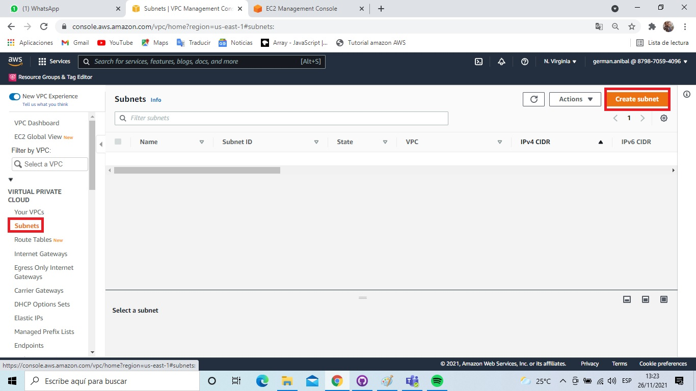
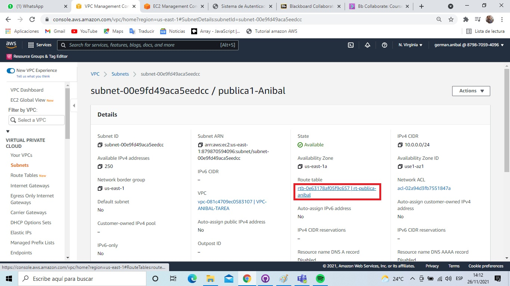

Configuracion VPC
paso 1: Buscamos la herramienta VPC en AWS
paso 2: En la columna izquierda buscamos la opcion VPC, luego precionamos sobre el boton Create VPC
paso 3: Colocamos el nombre a nuestra VPC y configuramos nuestra IPv4, sin hacer ninguna otra configuracion tocamos el boton Create VPC
paso 4: Nos dirigimos nuevamente a la barra izquiera y buscamos Subnets, luego tocamos el boton "create subnet"

paso 5: Verficamos que nuestra VPC creada anteriormente este seleccionada
paso 6: Comenzaremos configurando una subnet publica, se sugiere usar un "name subnet" que la identifique como publica
"Availabity zone" puede usarse en cualquiera de las opciones considerando recordar este dato al momento de configurar nuestra primera subnet privada.
IPv4 CIDR BLOCK debe de mantener una secuencia.
Usando el boton "add new subnet" podemos abrir un nuevo formulario de configuracion subnet
paso 7: Ahora configuramos la subnet privada, al igual que en la subnet publica utilizamos un nombre para identificarla como privada (esto no la convierte en una subnet privada)
"Availabity Zone" debe de estar configurada en la misma zona de la anterior subnet publica. IPv4 CIDR BLOCK debe ser distinta siguiendo la secuencia de la subnet anterior

paso 8:Confirguramos nuestra segunda subnet publica, la diferencia recae en "Availabity Zone" donde se configura en una zona distinta y esta sera la misma de la segunda subnet privada
IPv4 CIDR BLOCK mantiene la secuancia de las anteriores Subnets
paso 9:Configuramos nuestra segunda subnet privada, "Availabity Zone" es la misma que en la segunda subnet publica
IPv4 CIDR BLOCK mantiene la secuancia de las anteriores Subnets
paso 10: Al volver al menu buscamos en la barra "Elastic IP" y precionamos el boton "Allocate Elastic IP Adress"
paso 11: Llenamo el tag con una key=name y un valor para identificarla, luego presionamos el boton "Allocate"
paso 12: Al volver al menu buscamos en la barra "route table" y presionamos el boton "create route table"
paso 13: Configuramos nuestra primera route table para nuestras subnets privadas, usamos un nombre que la identifique para uso privado
Seleccionamos en VPC nuestra vpc creada para el proyecto y presionamos el boton "create route table"
paso 14: Configurar una segunda route table para nuestras subnet publicas
paso 15: Volvermo al menu y seleccionamos Internet Gateway y luego presionamos el boton "create Internet Gateway"
paso 16: Solo le damos un nombre que identifique y presionamos el boton "Create Internet Gateway" para configurar las rutas de nuestras subnet publicas
paso 17: Verifiquemos que nuestro Internet Gateway esta attached a nuestra VPC, sino hacer las configuraciones desde el boton accion
paso 18: Volvemos al menu y buscamos Nat Gateway y presionamos el boton "Nat Gateway" para configurar las rutas de nuestras subnets privadas
paso 19: Le damos un nombre que pueda identificarla, seleccionamos una SUBNET PUBLICA y seleccionamos nuestra ELASTIC IP creada para nuestro proyecto
paso 20: Damos click en el boton "create NAT Gateway"
paso 21: seleccionamos subnets en el menu y comenezaremos a editar las rutas de nuestras subnet, seleccionamos la primera subnet publica (de preferencia)
paso 22: damos click en el boton accion y seleccionamos "Edite route table association"
paso 23: En route table Id: seleccionamos nuestra route table configurada para subnets publicas
paso 24: Y damos click en el boton "save"
paso 25: Volviendo al menu de subnet damos click en el link de nuestra route table configurada para subnet publicas

paso 26: Damos click en la pestaña routes y luego en el boton "edit routes"
paso 27:Damos click en "add route"
paso 28: destination siempre debe estar en 0.0.0.0/0 y en target buscamos Internet Gateway
paso 29: Seleccionamos nuestra Internet Gateway y damos click en el boton "save changes"
ESTE MISMO PROCEDIMIENTO DEBE REALIZARSE CON LA SUBNET PUBLICA 2
paso 30: Volvemos a el menu de subnets y seleccionamos nuestra primera subnet privada
paso 31: Seleccionamos nuestra route table configurada para subnet privadas y presionamos el boton "save"
paso 32: al igual que en el proceso anterio presionamos nuestra route table privada y nos vamos a editar las rutas como
lo hicimos con nuestras rutas publicas, al editar nuestras rutas seleccionamos como target: NAT Gateway
paso 33: Seleccionamos nuestra NAT Gateway y tocamos el boton "save"
ESTE MISMO PROCEDIMIENTO DEBE REALIZARSE CON LA SUBNET PRIVADA 2
Configurarion Auto Scalling Group
paso 1: Nos vamos al menu principal de AWS y buscamos EC2
paso 2: Seleccionamos en el menu lateral izquiero "Auto Scalling Groups"
paso 3: presionamos el boton "Create Auto Scalling Group"
paso 4: Le damos un nombre representativo de nuestro proyecto y luego elegimos un launch template que NO TENGA CONFIGURADO UN GRUPO DE SEGURIDAD
Luego presionamos el boton "next"

paso 5:Configuramos nuestra VPC y luego en Availabity zone and subnets seleccionamos SOLO NUESTRAS SUBNETS PRIVADAS

paso 6:Damos next a los siguientes pasos haciendo las configuraciones que encesitemos y revisamos la pagina final dando "Create Auto Scalling Group"
paso 7:Seleccionamos en el menu lateral izquierdo Target Group y damos click en el boton "Create Target Group"
paso 8: Llenamos los espacios con un nombre que identifique nuestro target group y VPC: seleccionamos nuestra VPC
Damos click en create Target Group

paso 9: Damos click en ambos checkbox de nuestras subnets creadas y damos click en el boton "includes as pending below"

paso 10: Movemos la pantalla hacia abajo y damos click en el boton "Create Target Group"

Configurarion LOAD BALANCER
paso 1: En el menu principal lateral izquierdo seleccionamos Load Balancer y damos click en el boton "Creat Load Balancer"

paso 2:Seleccionamos la primera opcion: Application Load Balancer y damos click en el boton "create"

paso 3: Le damos un nombre a nuestro LOAD BALANCER

paso 4: Confirmamos nuestra VPC y la seleccionamos, damos click en los checkbox que indican las Availabity zone
Seleccionamos nuestras subnets publicas 1 y 2

paso 5:Dejamos security group en default o como preferencia podemos crear o usar uno propio, y seleccionamos en Default action nuestro target group

paso 6: Damos click en "create load Balancer"

paso 7: Damos click en el boton al lado de nuestro DNS name para copiar el link en donde nuestra aplicacion se ejecutara

paso 8: Si todos los pasos se siguieron al pie de la letra entonces estaremos viendo nuestra app funcionando

plus: Si nuestro programa no funciona revisar el grupo de seguridad y tener las siguientes configuraciones